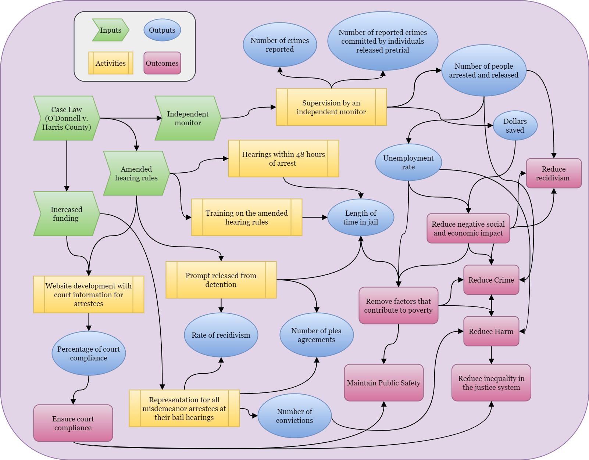

Introduction
The last decade has seen an explosion of conversations around mass incarceration. As the prison industrial complex has grown into a massive system detaining almost 2 million people in the US in 2023 (P. P. Sawyer & Wagner, 2023).It has been well documented that people of color, especially Black men, are more likely to become involved with the carceral system in the US (Eason et al., 2017; Pettit & Western, 2004; Sharkey, 2013; Simes, 2021). While race and class are inextricably intertwined, class conditions that lead to imprisonment stretch beyond the urban and racial factors usually associated with crime and subjugation (Eason et al., 2017; Pettit & Western, 2004). The removal of individuals from an already struggling community only contributes to the cycle of instability that leads to crime and harm. These individuals are fathers, workers, caregivers, and other valuable members of their community; ripping them from their families not only impacts those who may have violated the law but those they leave behind who may have been financially or emotionally dependent on them (Gilmore, 2007).
As several places have made reforms to the cash bail system, including ending the practice for many charges, the impacts of these reforms are beginning to take shape. While some opponents to these changes worry that releasing individuals charged with a crime while they await trial will cause an increase in crime, there is no evidence of a correlation with increased crime rates (Preston & Eisenberg, 2022b). In fact, the opposite may be true; some places where cash bail has been largely eliminated have seen lower increases in crime than the national average or even reductions in crime when most places have seen increases due to the COVID-19 pandemic (Covert, 2022; Preston & Eisenberg, 2022a). Not only is bail reform not correlated with an increase in crime, but research also suggests that increased pretrial detention is linked with higher rates of conviction and recidivism (Gupta et al., 2016; Lowenkamp, 2022). It is important to assess not only whether unintentional negative impacts occur when policies are reformed, but it is also important to assess the nature and degree of positive impacts to advance the widespread adoption of policies that are good for people and equality.
Program overview
In May 2016, a young woman filed a class action suit in the U.S. District Court for the Southern District of Texas against Harris County, Texas, and the Harris County Sheriff’s Department claiming that the county’s bail system violated the Equal Protection and Due Process Clauses of the Constitution. Bail amounts were set according to a predetermined schedule that did not take individual circumstances into consideration.
After more than three years in the courts, in November 2019, Judge Rosenthal approved the consent decree which required Harris County to make major reforms to its bail program. Reforms included amended hearing rules and a requirement for clear and convincing evidence that an individual can pay the bail amount required for release. The decree also provided more funding for representation for all misdemeanor bail hearings and a website for arrestees to access important case information to support compliance (O’DONNELL V. HARRIS COUNTY, 2019).
Money bail systems have long been utilized by the criminal justice system to detain individuals arrested for a crime while they await trial. In a study published in the Stanford Law Review, researchers found that pretrial detention leads to individuals pleading guilty simply to be released, receiving longer jail sentences, and increases the likelihood of the individual committing future crimes (Heaton & Stevenson, 2016).
Bail reform, including the elimination of money bail for most misdemeanor offenses, reduces socioeconomic inequality in the justice system, increases compliance with future court dates, and does not contribute to increases in crime in the area (Widra, 2022). This policy certainly decreases the length of time individuals are detained, and the negative impacts of detention have been well documented. Aside from less quantifiable consequences such as job and income loss while detained, time away from children and family, and the impact and trauma of those relying on the individual for financial and emotional support, there is plenty of empirical support linking pretrial detention to higher rates of conviction (Digard & Swavola, 2019). Reducing the amount of time individuals spend in jail before they are ever convicted of a crime is essential to increasing equality, reducing factors that contribute to criminal activity, and overall reducing harm to a community.
Program theory and implementation
The Fourteenth Amendment of the US Constitution protects liberty and equality stating, “No State shall make or enforce any law which shall abridge the privileges or immunities of citizens of the United States; nor shall any State deprive any person of life, liberty, or property, without due process of law; nor deny to any person within its jurisdiction the equal protection of the laws.” Cash bail systems violate this right by imprisoning individuals who have not been convicted of a crime simply for their inability to pay bail.
If the ultimate goal is to increase equality in the justice system while maintaining public safety, cash bail is impeding that goal. Detaining individuals because they are poor has a negative social and economic impact because it removes people from their families and their jobs. By reducing negative social and economic impacts, factors that contribute to poverty can be lessened or eliminated. A wealth of research exists to support the theory that poverty and inequality are positively correlated with increased crime (Fajnzylber et al., 2002; Fleisher, 1966; Freeman, 1999; Mohammed et al., 2018). Additionally, the issue of racial disparities in earnings is also a well-researched subject (Akee et al., 2019; Intrator et al., 2016; Liu et al., 2017). Thus, it follows that removing cash bail for misdemeanors would lead to more racial and economic equality, which may lead to reduced crime and reduced harm while maintaining public safety.
Detaining individuals without due process is not only unconstitutional and potentially a human rights violation, it also has negative impacts on the community. According to a 2018 study, more than half of inmates in local jails were parents to children under 18, and that percentage was even higher for women (W. Sawyer, 2018). In a survey conducted by George Mason University in 2016, 40.5% of detained parents reported that being in jail has or would change the living situation for their children (Kimbrell & Wilson, 2016). The impact on children, when the parent they rely on for emotional and financial support is separated from them, can be traumatic, significant, and permanent. The same survey also revealed that of the participants, 69.9% were employed before being detained, and of those 84.3% worried they would lose employment due to detention (Kimbrell & Wilson, 2016).
Based on the theory that cash bail systems discriminate based on financial status and detention has a negative impact on communities, reforming the bail system is an optimal solution to reduce inequality, crime, and harm in general.

Logic model
Unlike programs simply providing a service or resources, bail reform in Harris County removed activities involved with the bail system. In accordance with the O’Donnell v. Harris County decree, the end of the cash bail system requires website development with court information for arrestees, training on the amended hearing rules, representation for all misdemeanor arrestees at their bail hearings, supervision by an independent monitor, and hearings within 48 hours of arrest. Increased funding and amended hearing rules influence each of these activities. The outputs of the new policy are similar to the former system in terms of recorded numbers (i.e., rates of arrests, reported crime, plea agreements, recidivism, court compliance, etc.). Additionally, the average length of time someone spends in jail and the cost of detention and bail processes are measurable changes due to the reform. These measurable outputs are useful indicators that can be used to assess the policy’s impact on more abstract outcomes, such as reducing factors that contribute to poverty, crime and harm, negative economic impact, and increased equality in the justice system without compromising public safety.

Outcome and causation
Main outcome
While there are arguably many positive outcomes that could be impacted by bail reform and the elimination of cash bail, the most important outcomes may include greater equality in the justice system, reduced negative social and economic impact, reduction of factors that contribute to poverty, and reduced crime and harm in general. Several of these outcomes have begun to garner attention from advocates publishing data on changes after these reforms (Heaton, 2022; Widra, 2022). Some of these outcomes are broad and difficult to measure, but inequality in the justice system can be measured in part by assessing disparities around racial identity and socioeconomic status in who chooses to accept a guilty plea deal and whether detained defendants are more likely to be convicted or receive longer sentences. Administrative data is available for both the bond amount and the outcome of the charges for both before and after the reform was implemented along with demographic attributes.
Measuring Increased Equality in the Justice System
To measure equality in the justice system, economic and racial disparities must be considered. An obvious place to start might be with the rate of arrests, convictions, and sentencing across individuals with different economic and racial backgrounds because this could illuminate clear patterns of discrimination inherent in the system. However, the inequality on the part of law enforcement, prosecutors, judges, and laws has been well documented and reported on and does not necessarily correlate directly with the affordability of bail (Gase et al., 2016; Mitchell & MacKenzie, 2004; Racial Disparities in Sentencing, 2022; Threadgill et al., 2022).
Many individuals have stated that they chose to agree to a plea deal because they could not afford bail and the alternative was to wait in jail for a court appearance (Subramanian et al., 2020). If the cost of bail was no longer an obstacle, the rate of individuals accepting plea deals should decrease because innocent people would not normally agree to a guilty plea without the coercion of pretrial detention.
The conviction rates for detained and released defendants are also measurable, and it is a good indicator of to what degree there is an advantage of not being detained when appearing in court (Dobbie et al., 2018; Gius, 2018). Individuals are to be presumed innocent until proven guilty, but appearing in court in a jumpsuit and shackles can give the impression of guilt even for innocent defendants. If bail reform allows people to be released from jail while they await trial, it follows that the implicit bias that leads to a higher conviction for detained defendants would be alleviated. While the rate of conviction for detained defendants may not be impacted for defendants who are not eligible for release at all, it would remove the economic barrier for many to have a chance of a fair hearing.
To measure the impact of bail reform on economic disparity in the justice system, the rate of individuals agreeing to plea deals after arrest and overall changes before and after the change. While collecting information from every arrestee about their reason for accepting or rejecting a plea deal is not feasible, using public records to compare trends before and after to determine if the rate of cases ending in plea agreements changed after implementation. If the probability changes after the elimination of cash bail for misdemeanors in Harris County, but not in a comparable county without the reform, it is evidence that release from detention was a primary reason for considering a plea deal.
Causal theory
The claim that bail reform, or eliminating cash bail for misdemeanors, reduces the number of plea deals that defendants agree to take can be difficult to prove, but the logic does follow. The cash bail system requires arrestees to pay a court-ordered amount of money in order to be released from jail while awaiting trial. However, many individuals who cannot afford to pay must remain in custody until trial. There is logical and empirical evidence that individuals who can not afford to pay bail agree to plea deals regardless of guilt simply to be released from detention (Subramanian et al., 2020). Detaining individuals simply on the basis of their inability to pay before they are ever convicted of a crime leads innocent people to accept guilty pleas to avoid additional time away from their families and livelihoods. Based on this logic, it seems plausible that eliminating cash bail would cause fewer people to choose to accept a guilty plea since they can go about their lives while they await the opportunity to prove their innocence.
There are many factors that influence the affordability of bail and case outcomes (including plea deals), and sometimes both. Criminal record and the particular presiding judge may influence whether or how high bail is set; socioeconomic status (SES) also influences whether the amount is affordable, and race, gender, and family size may influence SES. The prosecutor may influence the judge, and white supremacy may influence both the judge and the prosecutor. Independently, the evidence of guilt, or lack thereof, may impact the prosecutor’s decision on both the request for bail, a plea deal, and the ultimate outcome of the case. The affordability of bail directly impacts the length of time someone is detained, but the length of detention for an individual awaiting trial is also determined by state resources to manage criminal cases. State resources also influence jail conditions, and both jail conditions and the length of detention can impact someone’s decision to accept a plea deal to expedite their release.
Several of these factors cannot be measured directly or accurately, however, those factors can be controlled for by comparing Harris County to another comparable county with similar trends before the change was implemented. Using time (before or after the change) and location (Harris County or some other place), the impact of the policy change can be isolated. With the assumption that, if both places had parallel trends before the change, they would have continued to maintain that trajectory had the change not been implemented, the difference between the anticipated outcome and the actual income will estimate the isolated impact of the new policy.
Hypotheses
Based on the previous research and theory discussed, bail reform in Harris County should illicit a reduction in the number of guilty plea deals accepted and reduce disparity along racial and economic groups. It is also likely that the overall rate of conviction will decrease if defendants are released pretrial and are more able to seek legal counsel and retain their employment status. Even where convictions still occur, sentencing should be impacted as more defendants are able to prepare and present in court in their own clothes and with the support of their families and communities instead of in shackles and a jumpsuit with limited access to legal and emotional resources.
Data and methods
Identification strategy
Identifying and measuring the actual impact of bail reform on equality in the justice system may be a difficult endeavor, but by using the rate of plea agreements for misdemeanors before and after the reform in Harris County and a comparable county with parallel plea agreement trends prior to implementation. As explained earlier, the assumption is that if the trends were parallel prior to the policy change, it is expected that the parallel trend would have continued without the change. Using this difference-in-difference method, the confounding factors that can not be easily measured do not obscure the impact of the new policy since it is assumed that those factors influence outcomes similarly in the treatment location (Harris County) and the control location. Using comparable counties, the public record data from each location serves as an account of a sort of “real world” experiment. In this way, the impact specifically from the changes to misdemeanor bail practices in Harris County can be isolated.
If it is true that many people accept plea agreements to resolve their case quickly due to inability to pay bail, elimination of cash bail should give those charged with a misdemeanor the opportunity to fight their case outside of jail. While surly some agree to plea deals for other reasons, the number accepting plea deals purely for economic reasons should shrink by removing this part of the financial barrier. To be sure, there are many other factors contributing to racial and socioeconomic status in the justice system, from court costs and access to adequate legal counsel, not holding people hostage simply for being poor may be a good place to start. The rate of plea agreements may not capture all of the dimensions of inequality, but it may indicate an attainable goal for improvement.
Though comparing Harris County with a comparable county may estimate the impact of the reform in Harris County, it may not mean that the impact is generalizable to all communities. There may be a case that it would work in the control county used for comparison, since those places have been determined as comparable with parallel trends regarding plea agreements, but other considerations must be made to make assumptions about other places. However, a detected impact in Harris County would illuminate policymakers in other places who may be considering similar reforms.
Data
All of the variables required for difference-in-difference analysis are available through public court records. Demographic variables such as age, gender, and race included in the records can help identify disparities in case outcomes. Some variables previously mentioned would not be included in court records, but they are not required for difference-in-difference analysis. Since the two locations are comparable and the trends regarding case outcomes were parallel before the reform, control variables are no longer essential to isolate the impact of the change. However, the demographic variables may be useful to assess whether the impact was greater for certain groups on average.
Since the court decree was issued at the end of 2019, data from three years prior and three years after will be acquired from the appropriate court clerk’s office. With six years of data, establishing trends and identifying the impact of the change should be feasible, assuming there is an impact to identify. Figure 3 demonstrates an example of what the trends and changes to plea deal rates might look like. Addition variables described above may also be available (judge, prosecutor, type of crime, etc.), and may provide insights to other disparities in the system, but are not necessary for this analysis. The required variables are the date of the arrest, the location, the bond amount, and the outcome of the case.
Synthetic analysis
| Interaction Model | Robust Model | With Controls | |
|---|---|---|---|
| (Intercept) | 0.643*** | 0.625*** | |
| (66.838) | (37.972) | ||
| Harris County | −0.002 | −0.002 | −0.002 |
| (−0.153) | (−0.237) | (−0.118) | |
| After Bail Reform | −0.001 | 0.002 | |
| (−0.081) | (0.128) | ||
| Harris County:After Bail Reform | −0.147*** | −0.148*** | −0.150*** |
| (−7.591) | (−11.935) | (−7.608) | |
| Latinx | −0.017 | ||
| (−1.147) | |||
| Other | −0.061** | ||
| (−2.580) | |||
| White | −0.131*** | ||
| (−12.278) | |||
| Male | 0.086*** | ||
| (6.423) | |||
| Length of Detention | 0.000 | ||
| (1.013) | |||
| Num.Obs. | 10000 | 10000 | 10000 |
| R2 | 0.018 | 0.018 | 0.037 |
| R2 Within | 0.012 | ||
| Std.Errors | by: year |
Using synthetic data, a simulation of the analysis can be performed. The data was created with many observable and unobservable variables detailed above with relationships between them to simulate a scenario that reflects the hypothesis and the causal diagram. The real data could be explored for further connections between race, criminal history, and type of misdemeanor charge, but this analysis focuses on four key variables—
- Date
- Before or After
- Location
- Harris County or Other Place
- Bond
- Yes or No
- Case outcome
- Dismissed, Guilty Plea, Acquitted, or Convicted
With just these four variables, each case can be grouped by location and whether the date of arrest was before or after the policy change. Using the average for each group, the difference between the differences measures the impact that can be attributed to the change. If the difference between each county before the reform is zero (they have the same rate of plea agreements), and the rate changes in Harris County but not in the other county, the difference between the changes is the effect of bail reform on the rate of plea agreements.
Using an interaction term in linear regression, the difference-in-difference effect can be calculated; Table 1 shows that the expected proportion of cases ending in a plea agreement fell by -0.147 in Harris County after 2019 when cash bail was eliminated for misdemeanor charges (using synthetic data). The interaction model groups together all cases before and after the change; the robust model shows similar changes, but it includes fixed effects for the year to calculate a more robust standard error. Even adding in additional controls such as race, gender, and length of detention, the impact does not change.
Conclusion
The findings from this analysis could validate and reinforce efforts to increase equality in the criminal justice system. Even if pretrail detention may still be the only option for some currently, working to make that system less harmful to the people impacted is an important task while fighting for bigger systematic change. Previous literature shows that elimination of cash bail does not cause an increase in crime or negatively impact public safety, the result of this analysis may provide evidence for additional positive change towards greater equality overall.
Even if there is not a direct impact on the rate of plea agreements after the policy change, it could be indicative that the class disparity is influenced by other factors such as access to legal counsel (even if not detained, socioeconomic status still impacts what kind of lawyer one can afford), white supremacy via police, prosecutors, and judges, and bureaucratic obstacles which can be overwhelming for people with limited resources. Cash bail is most certainly not the only cause of inequality, and if the impact of this change is not detectable, it may indicate that the problem is bigger and more embedded in the system than expected.
References
Akee, R., Jones, M. R., & Porter, S. R. (2019). Race Matters: Income Shares, Income Inequality, and Income Mobility for All U.S. Races. Demography, 56(3), 999–1021. https://doi.org/10.1007/s13524-019-00773-7
Covert, B. (2022, July 19). Bail Reform Helps Countless People. Why Don’t We Hear More of Their Stories? The Appeal. https://theappeal.org/bail-reform-success-stories-media-coverage/
Digard, L., & Swavola, E. (2019). Justice Denied: The Harmful and Lasting Effects of Pretrial Detention. https://www.vera.org/downloads/publications/Justice-Denied-Evidence-Brief.pdf
Dobbie, W., Goldin, J., & Yang, C. S. (2018). The Effects of Pre-Trial Detention on Conviction, Future Crime, and Employment: Evidence from Randomly Assigned Judges. American Economic Review, 108(2), 201–240. https://doi.org/10.1257/aer.20161503
Eason, J. M., Zucker, D., & Wildeman, C. (2017). Mass Imprisonment across the Rural-Urban Interface. The ANNALS of the American Academy of Political and Social Science, 672(1), 202–216. https://doi.org/10.1177/0002716217705357
Fajnzylber, P., Lederman, D., & Loayza, N. (2002). Inequality and Violent Crime. The Journal of Law and Economics, 45(1), 1–39. https://doi.org/10.1086/338347
Fleisher, B. M. (1966). The Effect of Income on Delinquency. The American Economic Review, 56(1/2), 118–137. http://www.jstor.org/stable/1821199
Freeman, R. B. (1999). The Economics of Crime. In Handbook of Labor Economics (Vol. 3, pp. 3529–3571). Elsevier. https://doi.org/10.1016/S1573-4463(99)30043-2
Gase, L. N., Glenn, B. A., Gomez, L. M., Kuo, T., Inkelas, M., & Ponce, N. A. (2016). Understanding Racial and Ethnic Disparities in Arrest: The Role of Individual, Home, School, and Community Characteristics. Race and Social Problems, 8(4), 296–312. https://doi.org/10.1007/s12552-016-9183-8
Gilmore, R. W. (2007). Golden Gulag: Prisons, Surplus, Crisis, and Opposition in Globalizing California (1st ed.). University of California Press. https://www.jstor.org/stable/10.1525/j.ctt5hjht8
Gius, M. (2018). The Determinants of Pretrial Detention and Its Effect on Conviction and Sentencing Outcomes. Justice Policy Journal, 16(2). https://www.cjcj.org/media/import/documents/determinants_of_pretrial_detention_gius.pdf
Gupta, A., Hansman, C., & Frenchman, E. (2016). The Heavy Costs of High Bail: Evidence from Judge Randomization. The Journal of Legal Studies. https://doi.org/10.1086/688907
Heaton, P. (2022). The Effects of Misdemeanor Bail Reform. Quattrone Center for the Fair Administration of Justice. https://www.law.upenn.edu/institutes/quattronecenter/reports/bailreform/#/
Heaton, P., & Stevenson, M. (2016). The Downstream Consequences of Misdemeanor Pretrial Detention. SSRN Electronic Journal. https://doi.org/10.2139/ssrn.2809840
Intrator, J., Tannen, J., & Massey, D. S. (2016). Segregation by race and income in the United States 1970–2010. Social Science Research, 60, 45–60. https://doi.org/10.1016/j.ssresearch.2016.08.003
Kimbrell, C. S., & Wilson, D. B. (2016). Money Bond Process Experiences and Perceptions. George Mason University Department of Criminology, Law and Society. https://www.prisonpolicy.org/scans/Money_Bond_Process_Experiences_and_Perceptions_2016.pdf
Liu, B., Wei, Y. D., & Simon, C. A. (2017). Social Capital, Race, and Income Inequality in the United States. Sustainability, 9(2, 2), 248. https://doi.org/10.3390/su9020248
Lowenkamp, C. (2022). The Hidden Costs of Pretrial Detention Revisited. Arnold Ventures. https://craftmediabucket.s3.amazonaws.com/uploads/HiddenCosts.pdf
Mitchell, O., & MacKenzie, D. L. (2004). The Relationship between Race, Ethnicity, and Sentencing: Outcomes: A Meta-Analysis of Sentencing Research. U.S. Department of Justice. https://www.ojp.gov/pdffiles1/nij/grants/208129.pdf
Mohammed, I., Hosen, M., & Chowdhury, M. A. F. (2018). Does poverty lead to crime? Evidence from the United States of America. International Journal of Social Economics, 45(10), 1424–1438. https://doi.org/10.1108/IJSE-04-2017-0167
O’DONNELL V. HARRIS COUNTY, 4:16-cv-01414 (November 21, 2019). https://clearinghouse.net/case/15377/?doc_page=3#document-list
Pettit, B., & Western, B. (2004). Mass Imprisonment and the Life Course: Race and Class Inequality in U.S. Incarceration. American Sociological Review, 69(2), 151–169. https://doi.org/10.1177/000312240406900201
Preston, A., & Eisenberg, R. (2022a, June 23). Don’t Blame Bail Reform for Gun Violence. Center for American Progress. https://www.americanprogress.org/article/dont-blame-bail-reform-for-gun-violence/
Preston, A., & Eisenberg, R. (2022b, September 19). Cash Bail Reform Is Not a Threat to Public Safety. Center for American Progress. https://www.americanprogress.org/article/cash-bail-reform-is-not-a-threat-to-public-safety/
Racial Disparities in Sentencing in the United States. (2022). The Sentencing Project / American Civil Liberties Union. https://www.sentencingproject.org/app/uploads/2022/10/07-14-2022_CERD-Shadow-Report-Draft_with-endnotes.pdf
Sawyer, P. P., & Wagner, P. (2023). Mass Incarceration: The Whole Pie 2023. Prison Policy Initiative. https://www.prisonpolicy.org/reports/pie2023.html
Sawyer, W. (2018). How does unaffordable money bail affect families? Prison Policy Initiative. https://www.prisonpolicy.org/blog/2018/08/15/pretrial/
Sharkey, P. (2013). Stuck in Place: Urban Neighborhoods and the End of Progress Toward Racial Equality. University of Chicago Press. https://press.uchicago.edu/ucp/books/book/chicago/S/bo14365260.html
Simes, J. T. (2021). Punishing Places: The Geography of Mass Imprisonment. Univ of California Press. https://books.google.com?id=jk8_EAAAQBAJ
Subramanian, R., Digard, L., Washington II, M., & Sorage, S. (2020). In the Shadows: A Review of the Research on Plea Bargaining. Vera Institute of Justice. https://www.vera.org/downloads/publications/in-the-shadows-plea-bargaining.pdf
Threadgill, M., Polizzano, K., Neiman, J., Byrnes, M., Seabrook, J., & Miller-Smith, A. (2022). Racial and Ethnic Disparities at the Front Door of Massachusetts’ Juvenile Justice System: Juvenile Justice Policy and Data Board. https://www.mass.gov/doc/racial-ethnic-disparities-at-the-front-door-of-massachusetts-juvenile-justice-system-understanding-the-factors-leading-to-overrepresentation-of-black-and-latino-youth-entering-the-system/download
Widra, E. (2022). What does successful bail reform look like? To start, look to Harris County, Texas. Prison Policy Initiative. https://www.prisonpolicy.org/blog/2022/03/28/harris-county-pretrial-reform-results/